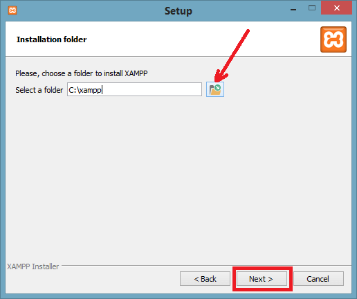
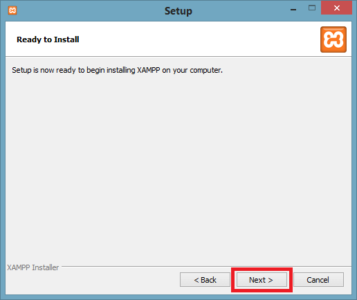
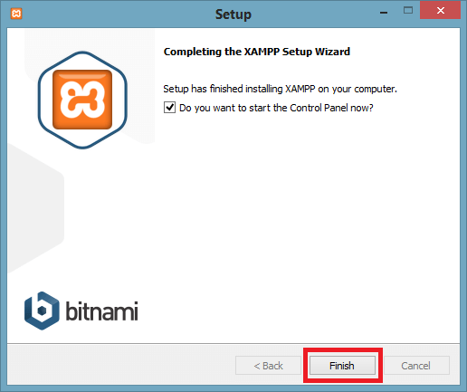
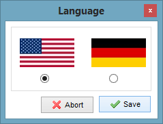

Para instalar PHP, lo recomendable es instalar la pila de software AMP (Apache, MySQL, PHP), disponible para todos los sistemas operativos. Hay muchas opciones de AMP disponibles en el mercado: WAMP para Windows, LAMP para Linux, MAMP para Mac, SAMP para Solaris, FAMP para FreeBSD, XAMPP (Cross, Apache, MySQL, PHP, Perl) para multiplataforma. Esta última también incluye algunos otros componentes como FileZilla, OpenSSL, Webalizer, Mercury Mail, etc.
Para instalar el servidor XAMPP, lo primero es descargar la versión elegida de su página web y seguir unos sencillos pasos:
- Después de descargar XAMPP, haga doble clic en el archivo descargado y permita que XAMPP realice cambios en su sistema.

- Aparecerá una ventana donde deberá hacer clic en el botón Siguiente.

- Aquí, seleccione los componentes que desea instalar y haga clic en Siguiente.

- Elija una carpeta donde desee instalar XAMPP en su sistema y haga clic en Siguiente.

- Haga clic en Siguiente y siga adelante.

- XAMPP está listo para instalarse, así que haga clic en el botón Siguiente e instale XAMPP.

- Aparecerá una ventana de finalización después de una instalación exitosa. Haga clic en el botón Finalizar.

- Elige tu idioma preferido.

- XAMPP está listo para usar. Inicie el servidor Apache y MySQL y ejecute el programa php en el host local.

- Si no se muestra ningún error, entonces XAMPP se está ejecutando correctamente.